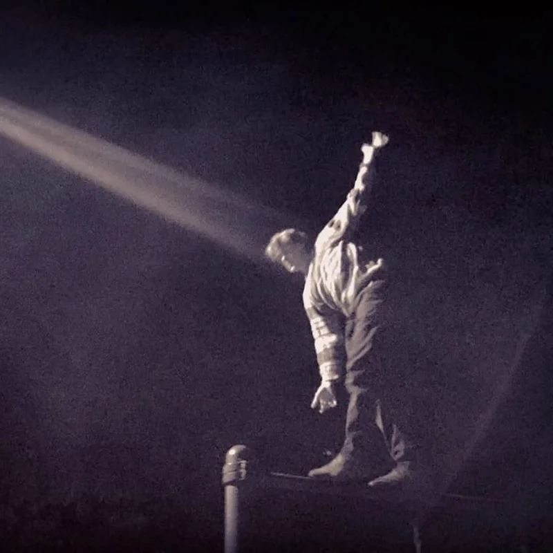

James Bolden · Creative technologist
I build the spaces where collaboration, community, and living systems meet.
I'm a creative technologist working across parametric geometry, web systems, and human–AI collaboration. Through my studio IRIS Cocreative and a constellation of projects, I collaboratively design and build digital places that change how people think and relate together.
- Building Collab OS, a shared surface where distributed teams see their work as a landscape instead of a list.
- Shipping Weft, a node-based design tool. The lattice breathing behind this page was drawn in it.
- Designing Holos with the Holomovement: a member globe, events, and live rooms for a community working toward wholeness.
First entry in the Journal
Two names became one.
Last September I married the love of my life. Instead of one of us taking the other's name, we wove a new one from both. The story of how Bolden came to be: a name neither inherited nor given, but made together, the way we hope to make everything else.
IRIS Cocreative
Founder & Creative Director
Designers and engineers working with NGOs, thought leaders, and companies whose work is about connection. I direct the creative and technical vision and stay close to the build.
The studio is the trunk. Most of what follows grows out of it.
Holos
Platform design & build
Holos helps a global network of people and organizations find each other, convene, and act together around the idea that we are part of one interconnected whole.
Designed and built end to end, from the signup flow to the map, on Webflow and Supabase with a custom component layer.
Collab OS
Product design & engineering
Collab OS sits over the tools teams already use and shows the work as a map over time. Zoom in for the detail of a single action; zoom out for the arcs of many processes running side by side.
In use across IRIS client engagements, and the place where this site's original dashboard was always heading.
Lines of Thought
Research map · The Commons
Every line is a person, every column a question. Positions are coded from direct statements, with the evidence and its history one click away inside each profile. Built with Claude as research partner and published in the Collab OS Commons.
Weft
Tool design
Over 180 nodes, live audio in, SVG and JavaScript export, and a gallery of patches from phyllotaxis to Stonehenge. Eighteen years of parametric practice, finally as a tool other people can pick up.
The ambient lattice on this page is a Weft graph, hand-compiled so it costs almost nothing to leave running.
Vector Iris
Tool design & build · IRIS Lab
Three modes: Trace follows the pixels closely, Redraw rebuilds the image with AI-guided shapes, and Generate makes new artwork from a text prompt. Results land beside the source at the same size, with no upload site and no download folder. Powered by Quiver's Arrow models, with far cleaner output than a classic trace.
Motion Library
Research index · The Commons
Each study takes one piece of motion on the web that stopped us, rebuilds it in plain canvas, and names the primitives it runs on. Twelve are full pages with figures you can drive, and every card runs a live scrap of its own study rather than a picture of one.
IRIS Lab
Research & Development
Circular and radial interfaces, sensemaking tools, AI as a genuine thinking partner, and the Digital Pattern Language, a living pattern language for humane, regenerative digital spaces, now in development.
Our Awakening World
Creative project
A growing atlas of the people and communities catalyzing collective awakening worldwide: a way to see the movement and find each other within it. I designed and built the digital home for the project.
In collaboration with


Awakening Together: Featured Artist
Featured artist for the spring issue of Artist of Possibility Magazine, published by Emergence Education Press.
Love the System, Ep. 22
A long-form conversation with host Layman Pascal on integral thinking, systems, and designing for collective intelligence.
James Bolden, IRIS Cocreative
A conversation on purpose, the Holomovement, and building digital spaces for collective awakening.
Evolutionary Leaders Circle
Profile in the Evolutionary Leaders circle, a global network of individuals advancing conscious evolution and planetary flourishing.
In a Single Bound
It's just him, open space and a landscape full of possibilities.
"Loosen up. Don't think. Explore," [Bolden] said. "Use what's there in unconventional ways."

Want to talk through a project, a collaboration, or an idea taking shape? Pick the length that fits the conversation.